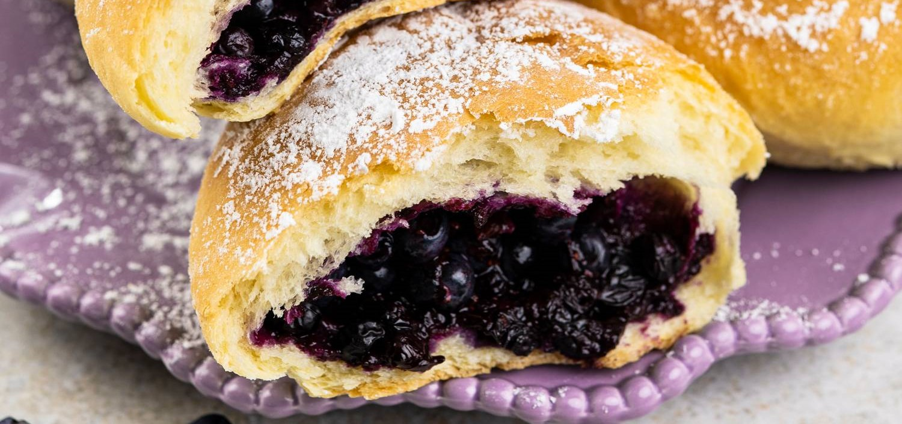
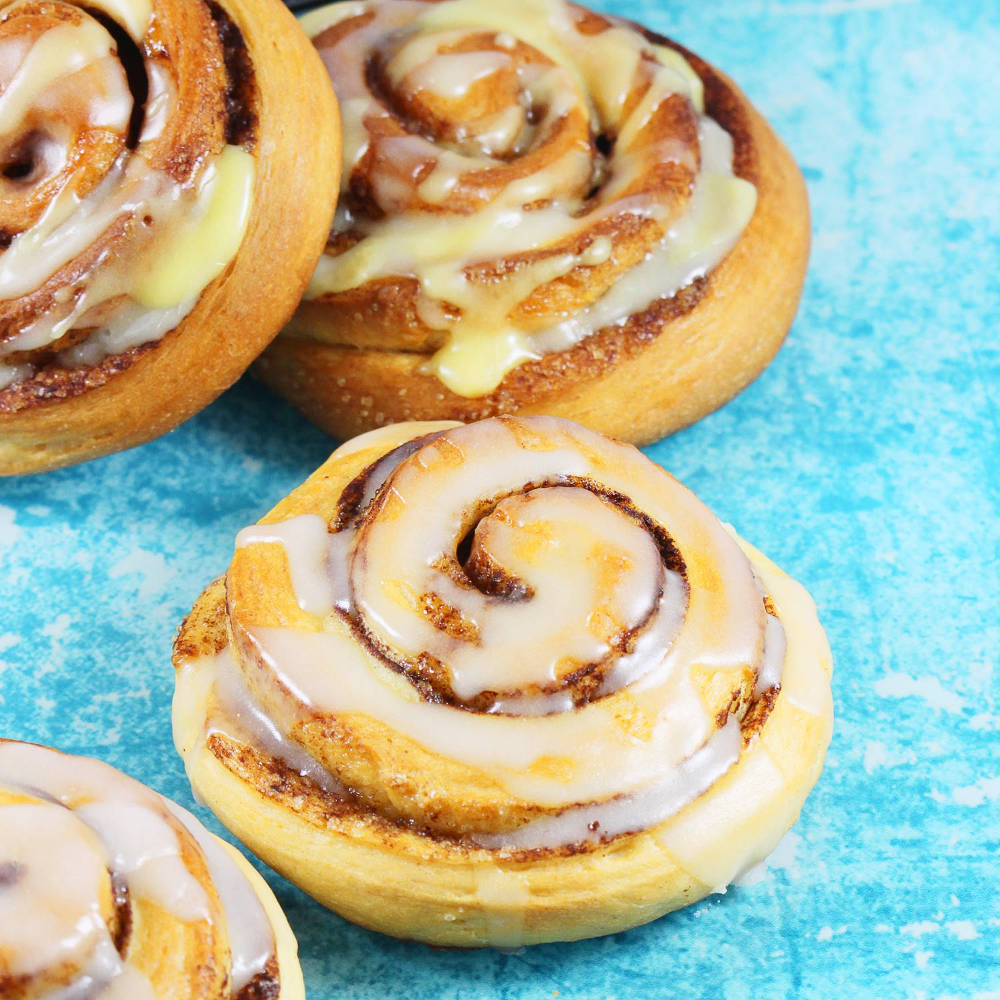

Najlepsze Zdrowe Desery
Spróbuj ich, a już nigdy nie kupisz gotowych
Lista Deserów:
Jagodzianki

Cynamonki

Na Koniec Pare Żartów
Dresiarz idzie do lasu a jakiś człowiek go pyta: gdzie idziesz? A dresiarz odpowiada: po ziomki.
Co mówisz jak wieszasz pranie?
- Rzeczywiście.
Poszła babka po mleko, i dostała z bańki.
- Coś okropnie pachnie na klatce schodowej. Pewnie coś tam zdechło - mówi żona.
- Nie, to raczej ci z parteru coś gotują - przekornie dodaje teściowa.
- Sprawdzę - mówi mąż i wychodzi z mieszkania.
Po chwili wraca:
- Tym razem obie miałyście rację...
Mówi cieć do ciecia:
- Która godzina?
- Ciecia.